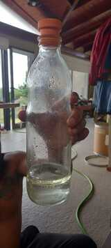
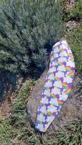
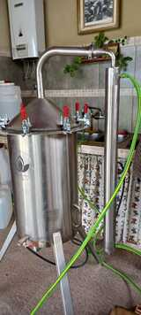
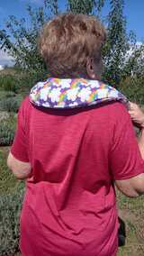
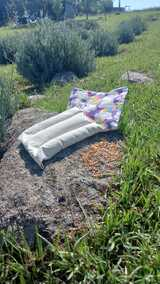

¿Qué ofrecemos?
Elaboración de productos y servicios a base de las plantas aromáticas.
Son artesanales, agroecológicos, conscientes, manufacturados desde el sentir, al pie del Cerro Champaqui; orientados a promover el equilibrio y mejorar la calidad de vida.




